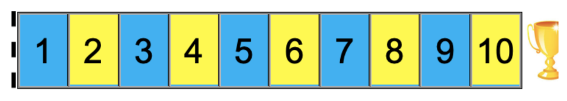

Jogo de Corrida
Pensamento Computacional
Ensino Fundamental 1
Informações gerais:
- Eixo: Pensamento Computacional – sequências, loops, tomada de decisões,
contagem, estados finais.
- Público: Estudantes do Ensino Fundamental 1.
- Objetivo: Ser o primeiro a alcançar o quadrado “10” (ou “20” para os mais
avançados), compreendendo conceitos básicos de lógica e programação.
- Duração: Variável, conforme número de rodadas.
- Formato: Duplas.
- Materiais: Tabuleiro numerado (10 ou 20), duas peças, um dado.

Tabuleiro para uso na atividade.
Regras do jogo:
- Coloque as duas peças atrás da linha de partida.
- O primeiro jogador rola o dado.
- Se tirar 1: mover para a próxima casa e dizer o número nela.
- Se tirar 2: mover para a próxima casa, dizer o número, depois avançar mais uma e dizer o novo
número.
- Alternar turnos entre os jogadores.
- O jogo termina quando um jogador chega ao quadrado “10” (ou “20”).
Conceitos trabalhados:
- Sequências e loops: Movimentos seguindo ordem de passos, como em um loop de
programação.
- Tomada de decisões: Diferentes ações baseadas no valor do dado (condicionais).
- Contagem e incremento: Nomear números ao mover reforça a ideia de incremento.
- Objetivos e estados finais: Compreensão de metas e condições de término.